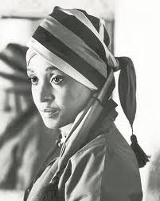

Mother of the nation
"It is betterto die foran idea that will live,than to live foran idea that will die."
Hand in hand, we shall liberate.
ANC Political Activist and ex-wife of Nelson Mandela, Deputy Minister of Arts and Culture, President of ANCWL, member of the NEC of the ANC First name: Winnie Last name: Madikizela-Mandela Date of birth: 26-September-1936 Location of birth: Mbongweni, Transkei, Eastern Cape, South Africa Date of death: 02-April-2018 Location of death: Milpark Hospital, Johannesburg
Strike the woman, and you strike the rock.
Winnie Madikizela-Mandela, the former wife of Nelson Mandela and for decades one of South Africa’s most prominent and polarizing figures, died April 2 at a hospital in Johannesburg. She was 81. Her family confirmed the death in a statement and said she had been hospitalized for an illness earlier this year. At the time of her death, long after her divorce from the country’s first democratically elected president, Mrs. Madikizela-Mandela was still called “the Mother of the Nation.” And in many ways, she epitomized the so-called “new” South Africa far more than her idealized former husband. She was beautiful and violent. Her bravery under the brutal apartheid regime won her lasting respect and adulation; allegations that she was the kingpin of a deadly vigilante group during the 1980s earned her fear and mistrust. She was a political insider who often played the role of outsider. While other leaders moved to luxurious, previously all-white suburbs, Mrs. Madikizela-Mandela stayed in Soweto, the black township southwest of Johannesburg.

Winnie Madikizela-Mandela's marriage to Nelson Mandela and her anti-apartheid activism ensured many South Africans saw her as the "Mother of the Nation", but her past was littered with dark controversies. Born Nomzamo Winifred Zanyiwe Madikizela, and always known simply as "Winnie", she was married to Nelson for 38 years - one of the most storied romances of modern history. Most of their marriage was spent apart, with Nelson imprisoned for 27 years, leaving her to raise their two daughters alone and to keep alive his political dream under the repressive white-minority regime. In 1990 the world watched when Nelson Mandela finally walked out of prison - hand in hand with Winnie. But they separated just two years later and divorced in 1996 after a legal wrangle that revealed her affair with a young bodyguard. With or without Nelson, Winnie built her own role as a tough, glamourous and outspoken black activist with a loyal grassroots following in the segregated townships. "From every situation I have found myself in, you can read the political heat in the country," she said in a biography. Winnie was born September 26 1936 in the village of Mbongweni in what is now Eastern Cape. She completed university, a rarity for black women at the time, and became the first qualified social worker at Johannesburg's Baragwanath Hospital. It was her political awakening, especially her research work in Alexandra township on infant mortality, which found 10 deaths in every 1,000 births. "I started to realise the abject poverty under which most people were forced to live, the appalling conditions created by the inequalities of the system," she said.
Nelson Mandela, who was then married to his first wife, met Winnie at a bus stop in Soweto when she was 22. They wed in June 1958, but he soon went underground, pursued by the apartheid authorities. In October that year, Winnie was arrested for the first time at a protest by women against the pass system that restricted movements of black people in white-designated areas. After Nelson was sentenced to life in prison in 1964, Winnie was also in and out of jail as the police hounded her in a bid to demoralise him. Government security forces tortured her, tried locking her up, confined her to Johannesburg's Soweto township, and then banished her to the desolate town of Brandfort, where her house was bombed twice. She was allowed to visit her husband in prison rarely, and they were always divided by a glass screen.
In 1991, Winnie was convicted of kidnapping and assault over the killing of Stompie Moeketsi, a 14-year-old boy. Moeketsi, who was accused being an informer, was murdered by her bodyguards in 1989. Her jail sentence was reduced to a fine, and she denied involvement in any murders when she appeared before Archbishop Desmond Tutu at the Truth and Reconciliation Commission hearings. "She was a tremendous stalwart of our struggle, and icon of liberation - something went wrong, horribly, badly wrong," Tutu said as damning testimony implicated her. She served as a deputy minister in President Mandela's government, but was sacked for insubordination and eased out of the top ranks of the ruling party. After a 2003 conviction for fraud, she later rehabilitated her political career winning a seat in parliament in 2009 elections. But her bitterness emerged in 2010 newspaper interview, saying: "Mandela let us down. He agreed to a bad deal for the blacks." She also called Tutu a "cretin" and the reconciliation process a "charade", though she later claimed the quotes were never meant to be published Despite it all, she was a regular visitor travelling from Soweto - where she still lived - to Mandela's bedside in his final months, and she said she was present when he died. He did not leave her anything in his will. At her lavish 80th birthday party in Cape Town, Madikizela-Mandela wore a sparkling white dress and beamed with pleasure as she was lauded by guests that included senior politicians from rival parties.
you can read more about Winnie Mandela here wikipedia
copyright@